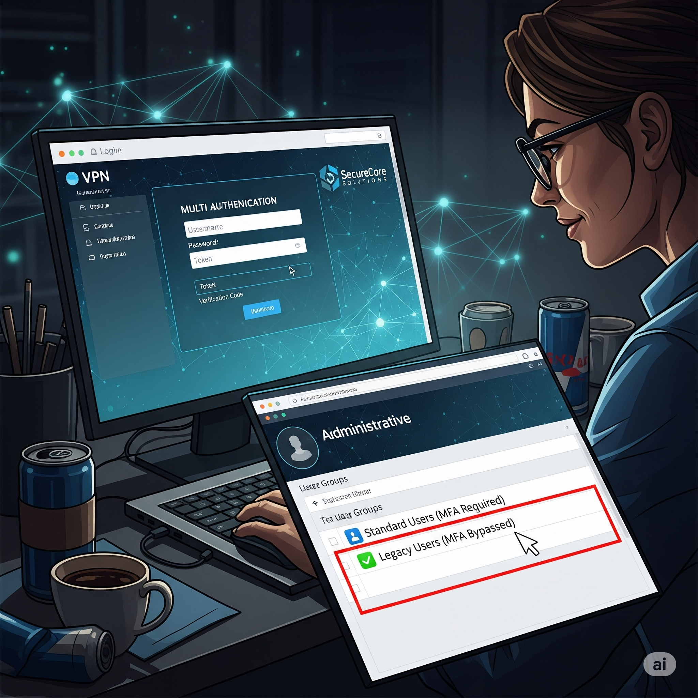

VPN and Internal Network Penetration Test Simulation
Welcome, in this new penetration test project, your target is a corporate VPN
network.
You will infiltrate from outside via VPN access and look for privilege escalation opportunities by
gathering information from inside.
Your mission is to assess the potential for infiltration and prove vulnerabilities within ethical
boundaries.
Your decisions will directly impact both the project's success and the security of the corporate
network!
Simulation Role
Your Role: Penetration Tester You are responsible for finding
vulnerabilities in the given network
and proving them within ethical boundaries.
Target: Corporate VPN and Internal Network Accessing the
company's VPN portal and
discovering resources in the internal network.
Key Metrics
Data Integrity Risk of data leakage or damage. (Start:
100%)
Network Performance Harm to application operation.
(Start: 100%)
Reputation Score Professionalism and ethical stance of the
security team.
(Start: 100)
Financial Impact Repair and penalty costs. (Start:
$0)
Data Integrity
100%
Network Performance
100%
Reputation Score
100
Financial Impact
$0
Time Remaining
10:00
Phase 1: OSINT & Naming Schema
Goal: Extract VPN Usernames
In the first phase of your penetration test, you gather information about the company from open
sources (OSINT).
Your goal is to find email and naming schemas to guess valid usernames that can be used on the
VPN portal.
Which OSINT technique will you apply to extract usernames?
Phase 2: Password Spray Plan (Lockout-Safe)
Goal: Gain VPN Access
Using the usernames obtained in the previous phase, you will try to gain access to the VPN
portal.
You need to try with a common password list without violating the company's account lockout
policies and without making noise.
Which password attack plan will you implement without triggering account lockout?
Phase 3: MFA / Portal Perimeter
Goal: Access VPN
Your Password Spray attack was successful, and you compromised a user account's credentials.
However, when you tried to access the VPN portal, you encountered an MFA (Multi-Factor
Authentication) barrier.
In this phase, your goal is to find a weak MFA configuration or an old access protocol to bypass
this barrier.
Which method will you try when you encounter the MFA barrier?
Phase 4: Low Noise Internal Recon
Goal: Discover Internal Network Resources
You have accessed the internal network via VPN. Now your goal is to gather information about
internal resources, servers, and potential sources of information leakage with as little noise
as possible.
This will prepare the ground for privilege escalation in the next phase.

Which recon methods will you use in the internal network without making noise?
Phase 5: Credential Hunting (Config/Script)
Goal: Find Credentials for Privilege Escalation
During your internal network reconnaissance, you found a `deploy.ps1` or `db.yml` file containing
potentially sensitive information in a file share.
Your goal is to find critical credentials such as usernames, passwords, or connection strings
embedded in these files and use them to increase your authority.
How will you extract credentials from sensitive files?
Phase 6: Proof of Impact with Service Account
Goal: Create Proof of Impact
In the previous phase, you captured the credentials of a service account. This account has
critical authority on the network.
Your goal is to use this authority to create a Proof of Concept (PoC) without causing permanent
damage to the system.
How will you create proof of your privilege escalation?
Phase 7: Report & Hardening
Goal: Comprehensive Reporting and Remediation
You have successfully completed the penetration test and proven the entire vulnerability chain
from VPN to the internal network.
Now, you need to prepare a report to present your findings to managers and the technical team
and make permanent improvement recommendations.
What reporting and hardening strategy will you follow to complete your project?
Penetration Test Evaluation Report
Simulation completed. Below is the detailed breakdown of your penetration test performance.